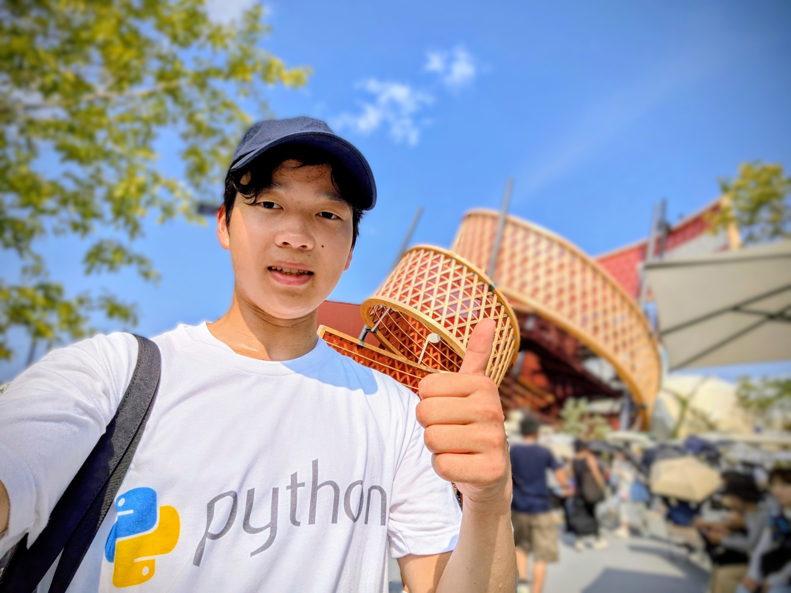

自己紹介（About）

〇日本語
奥河董馬です。
現在、弓削商船高等専門学校 情報工学科 2年生です。
2025年9月にWakuwaku of the Future Labを起業し、現在代表を務めております。
〇English
Toma Okukawa.
I am currently a 2nd-year student in the Department of Information Engineering at Yuge National College of Maritime Technology.
In September 2025, I founded Wakuwaku of the Future Lab, where I currently serve as the founder and owner.
お知らせ（Notice）
・2025/09/29：「研究」ページを追加しました！
・2025/09/03：ホームページを開設しました！